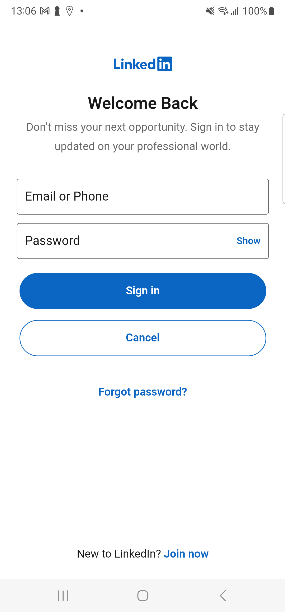

-
NonLoggedInDashboard
12:59:36 pm / 00:01:01:628 Pass
NonLoggedInDashboard
05.02.2024 12:59:36 pm 05.02.2024 1:00:38 pm 00:01:01:628 · #test-id=1PassVerify the user is able to see the updated Esso logo in the "NLID" screenWhen user log out from the app if logged inThen Check for Esso logo on NLIDPassVerify the user is able to see the updated Esso logo in the "NLID" screenWhen user log out from the app if logged inThen Check for Esso logo on NLID -
StationFinder
1:00:38 pm / 00:06:00:759 Fail
StationFinder
05.02.2024 1:00:38 pm 05.02.2024 1:06:39 pm 00:06:00:759 · #test-id=16PassCheck whether System to display Search button as enabled once has not entered any keyword for search text/input field.When user is on NLID screenWhen user taps on Station FinderWhen user tap on filter iconThen User should see Clear All button disabledAnd User should see Apply button disabledPassCheck whether System to display Search button as enabled once has not entered any keyword for search text/input field.When user is on NLID screenWhen user taps on Station FinderWhen user tap on filter iconAnd user tap on mobile payment enabled filterThen User applies the filterWhen user tap on filter iconThen User clears all the filterThen User applies the filterPassVerify The app should allow the user to apply the selected filter options on the Filter by screenWhen user is on NLID screenWhen user taps on Station FinderWhen user tap on filter iconAnd user tap on mobile payment enabled filterThen User applies the filterThen Check filter countFailVerify The app should display the Clear Filter button on the Filter by screen. (Manual Registered User)Given user log out from the app if logged inAnd user taps on "LinkedIn" icon in the NLIDAnd user tap on filter iconstepDefinitions.Hook.afterEachStep(io.cucumber.java.Scenario)c760ad21-6752-45ce-b03a-59a65c7ce08aThen user verifies the apply and clear all buttonStep skipped
-
org.openqa.selenium.TimeoutException
1 tests
org.openqa.selenium.TimeoutException
1 failedStatus Timestamp TestName Fail 13:06:06 pm And user tap on filter icon StationFinder.Verify The app should display the Clear Filter button on the Filter by screen. (Manual Registered User).And user tap on filter icon
-
@StationFinder
4 tests
@StationFinder
3 passed 1 failedStatus Timestamp TestName Pass 13:00:38 pm Check whether System to display Search button as enabled once has not entered any keyword for search text/input field. StationFinder.Check whether System to display Search button as enabled once has not entered any keyword for search text/input field.Pass 13:02:13 pm Check whether System to display Search button as enabled once has not entered any keyword for search text/input field. StationFinder.Check whether System to display Search button as enabled once has not entered any keyword for search text/input field.Pass 13:03:59 pm Verify The app should allow the user to apply the selected filter options on the Filter by screen StationFinder.Verify The app should allow the user to apply the selected filter options on the Filter by screenFail 13:05:33 pm Verify The app should display the Clear Filter button on the Filter by screen. (Manual Registered User) StationFinder.Verify The app should display the Clear Filter button on the Filter by screen. (Manual Registered User) -
@P11270-49315
1 tests
@P11270-49315
1 passedStatus Timestamp TestName Pass 12:59:36 pm Verify the user is able to see the updated Esso logo in the "NLID" screen NonLoggedInDashboard.Verify the user is able to see the updated Esso logo in the "NLID" screen -
@AndroidRegressionR221
6 tests
@AndroidRegressionR221
5 passed 1 failedStatus Timestamp TestName Pass 12:59:36 pm Verify the user is able to see the updated Esso logo in the "NLID" screen NonLoggedInDashboard.Verify the user is able to see the updated Esso logo in the "NLID" screenPass 13:00:08 pm Verify the user is able to see the updated Esso logo in the "NLID" screen NonLoggedInDashboard.Verify the user is able to see the updated Esso logo in the "NLID" screenPass 13:00:38 pm Check whether System to display Search button as enabled once has not entered any keyword for search text/input field. StationFinder.Check whether System to display Search button as enabled once has not entered any keyword for search text/input field.Pass 13:02:13 pm Check whether System to display Search button as enabled once has not entered any keyword for search text/input field. StationFinder.Check whether System to display Search button as enabled once has not entered any keyword for search text/input field.Pass 13:03:59 pm Verify The app should allow the user to apply the selected filter options on the Filter by screen StationFinder.Verify The app should allow the user to apply the selected filter options on the Filter by screenFail 13:05:33 pm Verify The app should display the Clear Filter button on the Filter by screen. (Manual Registered User) StationFinder.Verify The app should display the Clear Filter button on the Filter by screen. (Manual Registered User) -
@P11270-35260
1 tests
@P11270-35260
1 passedStatus Timestamp TestName Pass 13:02:13 pm Check whether System to display Search button as enabled once has not entered any keyword for search text/input field. StationFinder.Check whether System to display Search button as enabled once has not entered any keyword for search text/input field. -
@P11270-35263
1 tests
@P11270-35263
1 passedStatus Timestamp TestName Pass 13:03:59 pm Verify The app should allow the user to apply the selected filter options on the Filter by screen StationFinder.Verify The app should allow the user to apply the selected filter options on the Filter by screen -
@P11270-38688
1 tests
@P11270-38688
1 passedStatus Timestamp TestName Pass 13:00:08 pm Verify the user is able to see the updated Esso logo in the "NLID" screen NonLoggedInDashboard.Verify the user is able to see the updated Esso logo in the "NLID" screen -
@P11270-35252
1 tests
@P11270-35252
1 failedStatus Timestamp TestName Fail 13:05:33 pm Verify The app should display the Clear Filter button on the Filter by screen. (Manual Registered User) StationFinder.Verify The app should display the Clear Filter button on the Filter by screen. (Manual Registered User) -
@Sprintandroid2410
6 tests
@Sprintandroid2410
5 passed 1 failedStatus Timestamp TestName Pass 12:59:36 pm Verify the user is able to see the updated Esso logo in the "NLID" screen NonLoggedInDashboard.Verify the user is able to see the updated Esso logo in the "NLID" screenPass 13:00:08 pm Verify the user is able to see the updated Esso logo in the "NLID" screen NonLoggedInDashboard.Verify the user is able to see the updated Esso logo in the "NLID" screenPass 13:00:38 pm Check whether System to display Search button as enabled once has not entered any keyword for search text/input field. StationFinder.Check whether System to display Search button as enabled once has not entered any keyword for search text/input field.Pass 13:02:13 pm Check whether System to display Search button as enabled once has not entered any keyword for search text/input field. StationFinder.Check whether System to display Search button as enabled once has not entered any keyword for search text/input field.Pass 13:03:59 pm Verify The app should allow the user to apply the selected filter options on the Filter by screen StationFinder.Verify The app should allow the user to apply the selected filter options on the Filter by screenFail 13:05:33 pm Verify The app should display the Clear Filter button on the Filter by screen. (Manual Registered User) StationFinder.Verify The app should display the Clear Filter button on the Filter by screen. (Manual Registered User) -
@NonLoggedInDashboard
2 tests
@NonLoggedInDashboard
2 passedStatus Timestamp TestName Pass 12:59:36 pm Verify the user is able to see the updated Esso logo in the "NLID" screen NonLoggedInDashboard.Verify the user is able to see the updated Esso logo in the "NLID" screenPass 13:00:08 pm Verify the user is able to see the updated Esso logo in the "NLID" screen NonLoggedInDashboard.Verify the user is able to see the updated Esso logo in the "NLID" screen -
@P11270-35254
1 tests
@P11270-35254
1 passedStatus Timestamp TestName Pass 13:00:38 pm Check whether System to display Search button as enabled once has not entered any keyword for search text/input field. StationFinder.Check whether System to display Search button as enabled once has not entered any keyword for search text/input field.
Started
May 2, 2024 12:59:35 pm
Ended
May 2, 2024 01:06:39 pm
Features Passed
1
Features Failed
1
Features
Scenarios
Steps
Timeline
Tags
| Name | Passed | Failed | Skipped | Others | Passed % |
|---|---|---|---|---|---|
| @StationFinder | 3 | 1 | 0 | 0 | 75% |
| @P11270-49315 | 1 | 0 | 0 | 0 | 100% |
| @AndroidRegressionR221 | 5 | 1 | 0 | 0 | 83.333% |
| @P11270-35260 | 1 | 0 | 0 | 0 | 100% |
| @P11270-35263 | 1 | 0 | 0 | 0 | 100% |
| @P11270-38688 | 1 | 0 | 0 | 0 | 100% |
| @P11270-35252 | 0 | 1 | 0 | 0 | 0% |
| @Sprintandroid2410 | 5 | 1 | 0 | 0 | 83.333% |
| @NonLoggedInDashboard | 2 | 0 | 0 | 0 | 100% |
| @P11270-35254 | 1 | 0 | 0 | 0 | 100% |